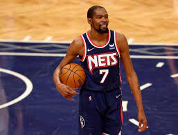
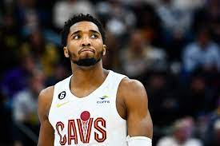
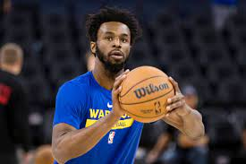
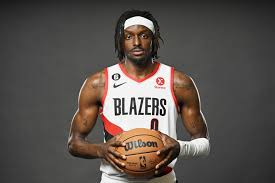

1. Stephen Curry, Golden State Warrior

Total Shot Value Added: 86.39
"The best shooter alive grades out as the best shooter alive" isn't a groundbreaking headline. Most of us probably would've expected Stephen Curry to bag first place going into this exercise. But the degree to which he secures it is absurd.
Curry more than doubles up the total shot value added of the second-place Durant. Literally, actually, what the hell?!?
Don't bother trying to suss out Curry's weak point. He has none. His above-the-break three-point shooting makes up the lion's share of his score, but only because he takes so many—more than anyone else. And he hits them at a 43.7 percent clip.
He pairs this lava-hot touch from ultra-deep with 50.9 percent shooting from mid-range and a 58.3 percent hit rate on corner triples.
He pairs this lava-hot touch from ultra-deep with 50.9 percent shooting from mid-range and a 58.3 percent hit rate on corner triples. The circumstances under which he bombs away don't matter, either. His 1.55 points per spot-up possession lands inside the 100th percentile, and among 87 players to attempt at least 25 pull-up treys, his 48.6 percent clip ranks first.
Not one for the nitty-gritty details? Well, the basics are just as effective in this case. Steph is ripping nylon on 44.1 of his 11.9 three-point attempts per game. His volume and efficiency are two anomalies rolled into one.
2. Kevin Durant,suns

Total Shot Value Added: 46.36
Regardless, despite grading out as a negative-value shooter beyond the arc, Durant has a higher mid-range score than anyone else alive. His 177 attempts trail only DeMar DeRozan, and he's finding the bottom of the net on those looks a logic-defying 55.4 percent of the time.
It's almost scary that KD has the runway to improve—and the track record to suggest that he will. His 33.9 percent clip from long range would be the second lowest of his career. He's one typical-KD-shooting stretch away from seeing his score skyrocket.
Durant was a heavily recruited high school prospect who was widely regarded as the second-best player in his class. In college, he won numerous year-end awards and became the first freshman to be named Naismith College Player of the Year. As a professional, he has won two NBA championships, an NBA Most Valuable Player Award, two Finals MVP Awards, two NBA All-Star Game Most Valuable Player Awards, four NBA scoring titles, the NBA Rookie of the Year Award, been named to ten All-NBA teams (including six First Teams), and selected 13 times as an NBA All-Star.
3. Donovan Mitchell, Cleveland Cavaliers
\

Total Shot Value Added: 45.19
Donovan Mitchell has done the vast majority of his damage this season on above-the-break threes. He finished with a net-negative score on mid-range jumpers, which he's converting at a 40.3 percent clip, and he hasn't taken enough corner threes (14) for it to be a material difference.
That kind of makes this top-three finish even more incredible. Mitchell has attempted 184 above-the-break triples, the fifth-most in the NBA, and hits them at a 42.9 percent clip.
His off-the-dribble efficiency from deep has been mesmerizing. He has put down 45.8 percent of his pull-up treys while making the second-most in the entire league.
This would seem to imply there's room for Mitchell to fade. But his 37 percent success rate on catch-and-shoot threes actually feels...low. He can afford to slip off the bounce, and then some, if he nudges up the efficiency on his assisted looks.
4. Andrew Wiggins, Golden State Warriors

Total Shot Value Added: 45.13
Turn the clock back three years or so. Imagine telling yourself that Andrew Wiggins would be a top-five most valuable shooter in 2022, and how that would go over, and how much 2019 You would laugh before ultimately slapping the hell out of 2022 You for being so seriously, mind-numbingly out of touch.
WELP.
Wiggins has gone from inefficient chucker and mega-draft bust to one of the two or three most important players on the reigning champs. And not only is he the Golden State Warriors' most important and reliable perimeter defender, but he's now one of the league's most deadly shooters, bar none.
Indeed, the role Wiggins plays now is unrecognizable from how he functioned on the Minnesota Timberwolves. That's the point. The Warriors have been able to streamline his usage. Self-creation remains caked into his offensive inklings, but it's merely the dipping sauce to the rest of his meal.
More than 75 percent of his made buckets are coming off assists, and he is automatic on these looks.
5. Jerami Grant, Portland Trail Blazers

Total Shot Value Added: 41.25
Speaking of above-the-break flamethrowers, we have Jerami Grant.
Making the most of his corner opportunities has helped, too. He's at 43.3 percent on those looks, including a surface-of-the-sun 58.8 percent clip (10-of-17) from the right corner.
Still, Grant's volume and efficiency from above the break inflate his score more than anything. He has found nylon on 42 of his 87 attempts—a 48.3 percent success rate that boggles the mind.
Yes, we just discussed Brogdon's 50.8 percent accuracy from the same spot. But he's unbottled 63 total above-the-break threebies. Grant is at 87. That isn't a gargantuan number relative to the rest of the league, but of the 67 players to attempt as many, no one is hitting them at a better clip.
Does it matter that Grant isn't creating most of these looks for himself? Perhaps. But only if you expect him to be a playmaking wing more than a secondary scorer who generates most of his own offense going downhill.